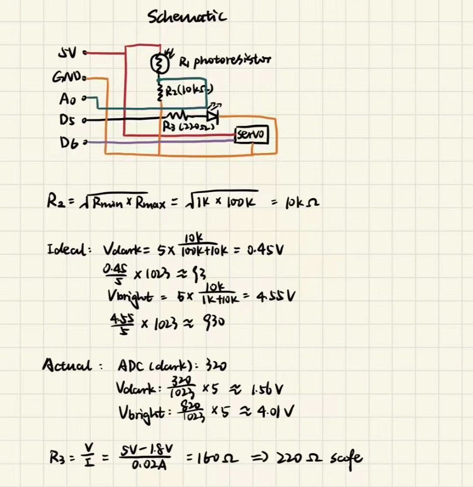
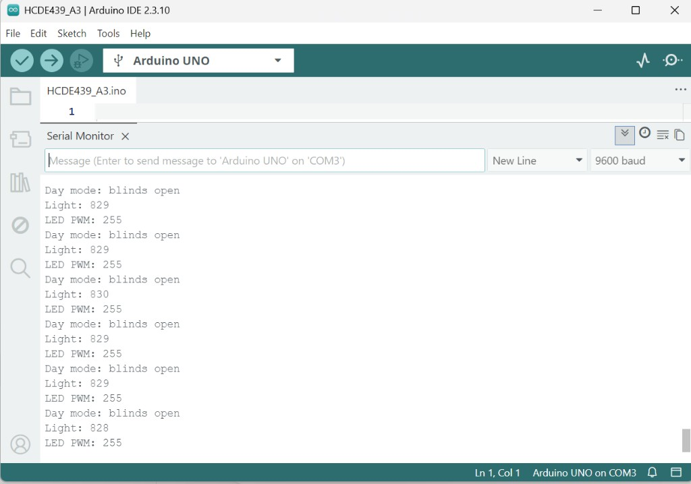
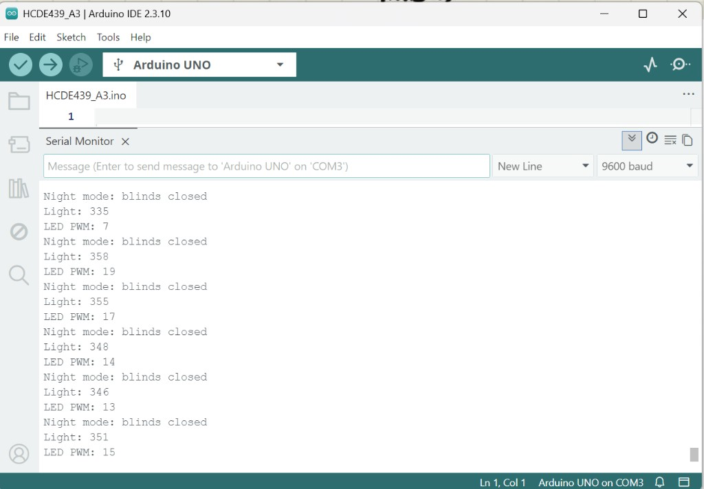
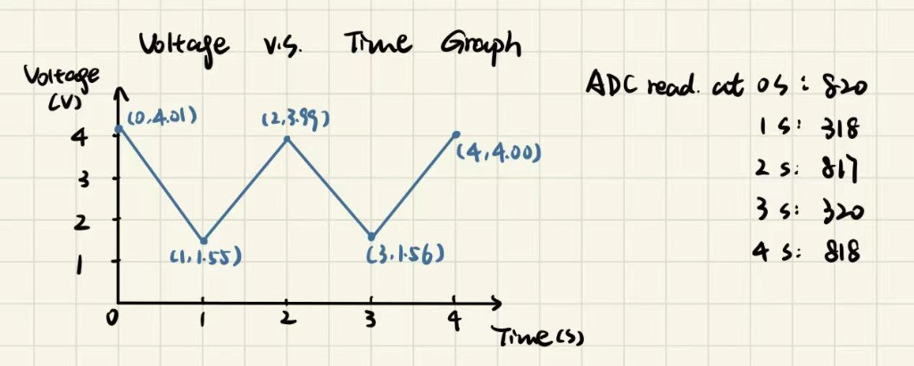

For this assignment, I built an automatic blinds system using an Arduino Uno, a photoresistor, a servo motor, and a red LED. The photoresistor detects changes in light. When the room is bright, the servo rotates to 90 degrees to open the blinds. When the room is dark, it rotates to 0 degrees to close the blinds. The red LED also changes brightness based on the light level.

Components:
Connections:
I used a 10 kΩ resistor with the photoresistor to create a voltage divider. The voltage at A0 changes depending on how much light reaches the photoresistor.
Assumed photoresistor range: 1 kΩ to 100 kΩ.
Rfixed = √(1,000 × 100,000) = 10 kΩ
Vmeasure = 5 × R2 / (R1 + R2)
Expected bright voltage:
5 × 10,000 / (1,000 + 10,000) ≈ 4.55 V
Expected dark voltage:
5 × 10,000 / (100,000 + 10,000) ≈ 0.45 V
Actual measurements:
I used a threshold of 570 to switch between day and night mode.
For the LED, I used a 220 Ω current-limiting resistor.
Assuming the LED forward voltage is approximately 2V:
I = (5 − 2) / 220 ≈ 13.6 mA
The program reads the photoresistor with analogRead(), maps that reading to LED brightness, and uses the servo to open or close the blinds.
// Include the library for controlling the servo.
#include <Servo.h>
// Create a servo object for the blinds.
Servo blinds;
// Set the photoresistor input pin.
const int sensorPin = A0;
// Set the LED PWM output pin.
const int ledPin = 5;
// Set the servo signal pin.
const int servoPin = 6;
// Set the light threshold from measured readings.
const int threshold = 570;
// Run setup once when Arduino starts.
void setup() {
// Start the Serial Monitor.
Serial.begin(9600);
// Set the LED pin as an output.
pinMode(ledPin, OUTPUT);
// Attach the servo to pin 6.
blinds.attach(servoPin);
}
// Repeat the input and output process.
void loop() {
// Read the light sensor from 0 to 1023.
int lightValue = analogRead(sensorPin);
// Map the sensor reading to 0 to 255.
int brightness = map(lightValue, 320, 820, 0, 255);
brightness = constrain(brightness, 0, 255);
// Change the LED brightness based on the light level.
analogWrite(ledPin, brightness);
// Check whether the room is bright.
if (lightValue > threshold) {
// Open the blinds in bright light.
blinds.write(90);
// Print the current blinds status.
Serial.println("Day mode: blinds open");
} else {
// Close the blinds in darkness.
blinds.write(0);
// Print the current blinds status.
Serial.println("Night mode: blinds closed");
}
// Print the label for the sensor reading.
Serial.print("Light: ");
// Print the sensor reading.
Serial.println(lightValue);
// Print the label for the LED PWM value.
Serial.print("LED PWM: ");
// Print the LED PWM value.
Serial.println(brightness);
// Wait before the next reading.
delay(300);
}

Yes. The photoresistor can be either R1 or R2, but its position changes how the measured voltage responds to light.
When the photoresistor is R1:
Bright: V = 5 × 10 / (1 + 10) = 4.55 V
Dark: V = 5 × 10 / (100 + 10) = 0.45 V
When the photoresistor is R2:
Bright: V = 5 × 1 / (10 + 1) = 0.45 V
Dark: V = 5 × 100 / (10 + 100) = 4.55 V
Both arrangements work, but the voltage changes in opposite directions.

| Time (s) | ADC Reading | Voltage |
|---|---|---|
| 0 | 820 | 4.01 V |
| 1 | 318 | 1.55 V |
| 2 | 817 | 3.99 V |
| 3 | 320 | 1.56 V |
| 4 | 818 | 4.00 V |
Voltage = (ADC / 1023) × 5
I covered and uncovered the photoresistor about every second. When it was uncovered, the voltage was around 4V. When I covered it, the voltage dropped to around 1.55V. The voltage changed repeatedly as the light level changed.
A 16-bit ADC has values from 0 to 65,535, and a 10-bit PWM output has values from 0 to 1,023.
The new mapping expression is:
map(reading, 0, 65535, 0, 1023)